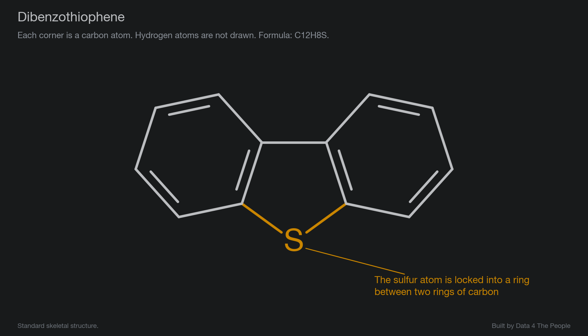
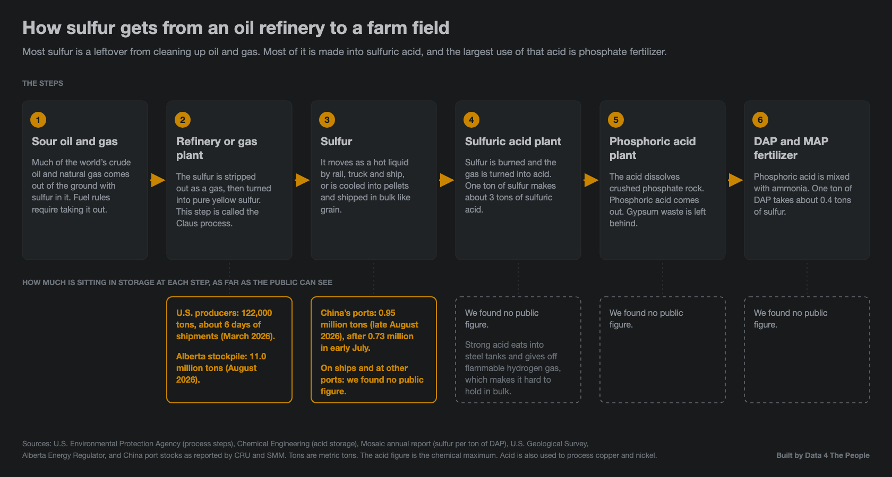
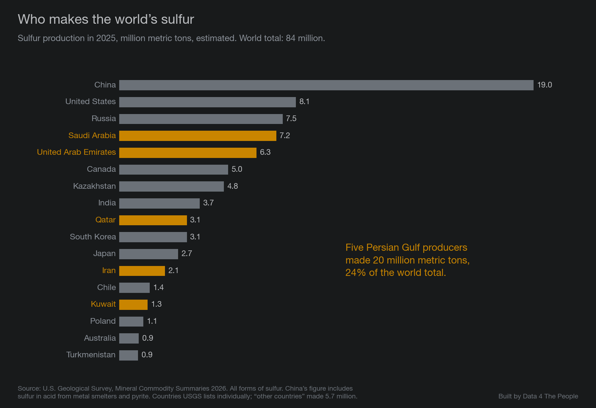
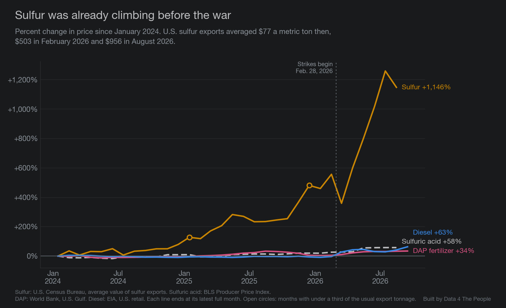
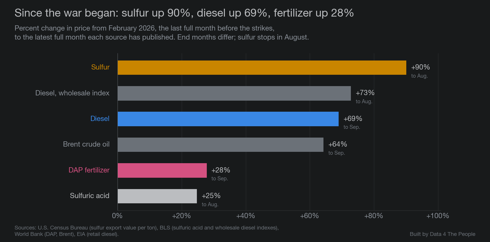
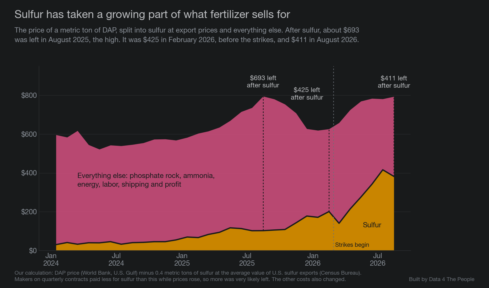
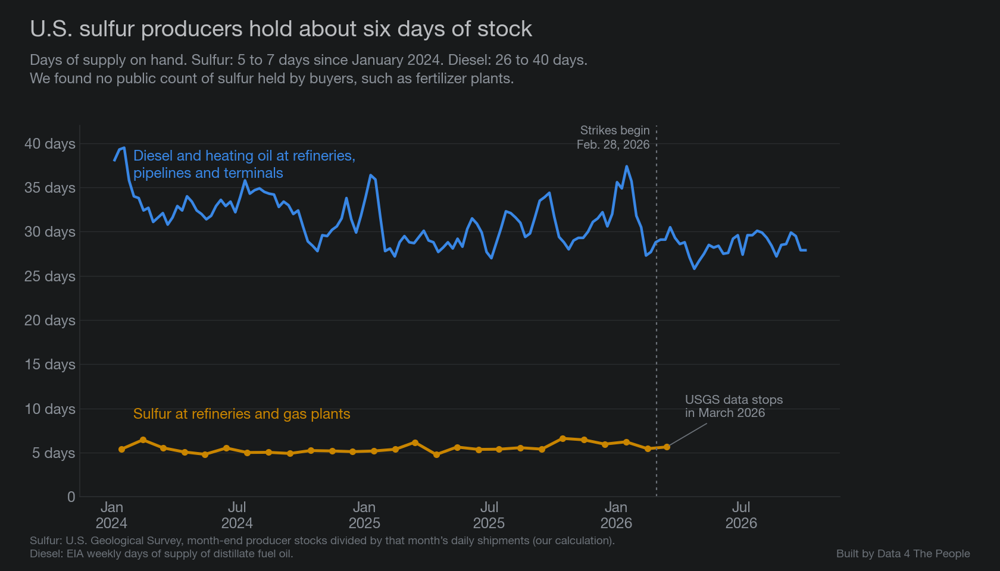
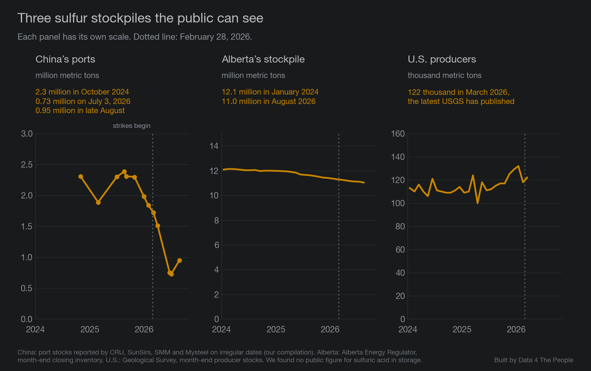
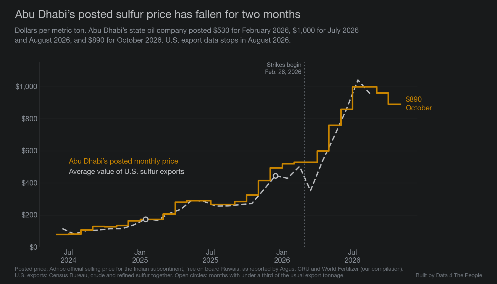

Draft for review
Not yet published. Charts and figures are current as of October 8, 2026.
Why you should care about sulfur
A leftover from oil refining is a key ingredient in fertilizer. Its price has risen more than 1,000% since 2024, and the war closed the route half the world's seaborne supply takes.
By Eric Pachman · Data 4 The People
Twenty-five years ago, I stepped into my first job out of undergrad, building refinery optimization models for ExxonMobil. Very early on I learned about sulfur, and how important it is to remove it during the refining process. My timing was not a coincidence. A few weeks before I started, the EPA had finalized a rule that would cut the sulfur allowed in highway diesel to 15 parts per million by 2006. Less than a decade earlier, diesel could carry as much as 5,000. Every refiner in the country had five years to figure out how to get there, and that is what the models were for. The reason to care is what sulfur does when it burns. It leaves the tailpipe as a gas, reacts with water and oxygen in the air, and comes back down as sulfuric acid, which has the pesky side effect of being one of the main ingredients in acid rain.
And so here I was, building molecular-level models to figure out how our refineries were going to meet specs for Ultra Low Sulfur Diesel.
This is when I met my arch-nemesis: dibenzothiophene.

You see, what I learned very quickly is this one class of hydrocarbons locked the sulfur up so tightly that no matter what the refinery did throughout processing, we could barely crack the sulfur out. And so, we had to measure the concentration of dibenzothiophenes in the crude oil we purchased to ensure that it was low enough for the diesel to meet spec after it worked its way through the refinery. I spent the better part of two years learning about and modeling dibenzothiophenes. Those were the days.
Here’s some more context you need for this story. My boss at the time was my former boss. After running our group, my former boss went on to a 36-year career with ExxonMobil, through roles that took him all over the company and to the bleeding edge of energy innovation.
Last week, my former boss found my work at Data 4 The People, reached out to me, and we chatted. He reminded me of my battle with sulfur, dredging up the trauma from those two years, and suggested I start looking into what’s going on with sulfur right now, as it’s a story about refining that few people know, but need to know… if they, you know, eat food.
And so, we come full circle. The work refiners did in those years to pull more sulfur out of fuel is the same work that supplies the sulfur for fertilizer today. This is a good thing, because sulfur is a key input to the fertilizers that help grow our food. But as my former boss warned, the same issues facing refineries that are driving up crack spreads are having an immense impact on the global supply of sulfur.
I was intrigued by this connection. So, I brushed off the cobwebs of my knowledge of sulfur and started researching. Here is what I found.
From a refinery to a farm field
Sulfur starts out as something refiners need to get rid of and ends up as something fertilizer makers need to buy. The diagram below follows it through six steps, and shows how much is sitting in storage at each one, as far as public data can tell us.

The yellow sulfur that comes out of a refinery is burned to make sulfuric acid. By the chemistry, one ton of sulfur makes about three tons of acid. That acid is then used to dissolve phosphate rock, which frees the phosphate that plants need. Add ammonia and you have DAP and MAP, the two main phosphate fertilizers.
The U.S. Geological Survey says about 90% of the sulfur used in the United States is turned into sulfuric acid, and the Environmental Protection Agency says most of that acid goes to phosphate fertilizer. Mosaic, a large U.S. phosphate producer, says it takes about 0.4 tons of sulfur to make one ton of DAP.
The sulfur does not end up in the fertilizer. It leaves the plant as gypsum waste. It is a processing chemical that gets used once, so fertilizer makers need a steady supply of it.
One more thing sets sulfur apart from most raw materials. Because it is a leftover from cleaning up oil and gas, the amount produced depends on how much fuel is being processed. A higher sulfur price does not bring more of it out of a refinery. This is really important to keep in mind.
Where the world’s sulfur comes from
The world made about 84 million metric tons of sulfur in 2025, according to the U.S. Geological Survey. The next chart shows who made it.

Saudi Arabia, the United Arab Emirates, Qatar, Iran and Kuwait made about 20 million tons between them, or 24% of the world total. That share understates how much the rest of the world leans on them. China, the largest producer, uses its own sulfur and still imported 9.6 million tons in 2025. The Gulf countries make far more than they use, so they export it. The trade publishers Argus, CRU and SMM put the Gulf’s share at 45% to almost 50% of all the sulfur that moves by sea, and those cargoes leave through the Strait of Hormuz.
The United States is in a different position. It makes about 8.1 million tons a year and relies on imports for only about 14% of what it uses, a little over half of that from Canada.
The price was climbing long before the war
There is no free public price for sulfur, so we built one from customs records: the average value of a metric ton of sulfur exported from the United States each month. It tracks the benchmarks the trade press reports. The chart below compares it with sulfuric acid, DAP fertilizer and diesel since January 2024.

U.S. sulfur exports averaged $77 a metric ton in January 2024. By February 2026, the last full month before the war, the average was $503. That is a rise of 556% with the Strait of Hormuz wide open.
Trade publishers point to several reasons. CRU estimated that the world used about 1.9 million tons more sulfur than it made in 2025. Nickel plants in Indonesia, which use sulfuric acid to pull nickel out of ore for batteries, were buying more. Kazakhstan had sold down its stockpile. And on November 1, 2025, Russia banned exports of sulfur.
By February 2026 prices in the Gulf had started to slip. Argus reported that the Middle East price fell 7% that month and that a larger drop had been expected.
Then the strait closed
The first strikes on Iran came on February 28, 2026. On March 2, Iran’s Revolutionary Guard announced that the Strait of Hormuz was closed. The same week, QatarEnergy halted sulfur production after a drone attack on its Ras Laffan complex, and Kuwait’s state oil company declared force majeure on its exports, which means it told customers it could not meet its contracts.
Some sulfur got out during a pause in the fighting in June. By late September, Argus reported that sulfur traffic through the strait had settled at one to three ships a week. China’s sulfur imports for January through July were down 59% from a year earlier, the lowest since 2002, according to CRU.
The next chart shows what has happened to prices since February.

Sulfur is up 90% through August. Retail diesel is up 69% through September, from $3.72 a gallon to $6.29. Both have risen much more than the products at the end of the chain. DAP is up 28% and the sulfuric acid price index is up 25%.
Why fertilizer has not kept up with sulfur
If sulfur has risen more than 1,000% since early 2024, why is DAP up only 34% over the same period? The chart below splits the price of a ton of DAP into two parts: the sulfur needed to make it, and everything else.

In January 2024, the sulfur in a ton of DAP cost about $31. The DAP sold for $596. Sulfur was about 5% of the price, so it could rise a long way before it showed up in the price of fertilizer.
By August 2026 the sulfur cost about $382 and the DAP sold for $794. At export prices, sulfur was close to half of what the fertilizer sold for.
The part left over after sulfur is what has to pay for the phosphate rock, the ammonia, the energy, the workers and the profit. It was about $693 a ton in August 2025. It was $425 in February 2026 and $411 in August. Most of that drop came before the war, during months when the price of DAP was falling and the price of sulfur was not.
Two cautions. Fertilizer makers buy most of their sulfur on quarterly contracts, and contract prices trailed the market on the way up. Mosaic reported an average sulfur cost of $522 a long ton in the second quarter of 2026, well below export prices at the time. So the real figures are very likely less severe than the chart. And the other costs in that upper band changed too, so it is not a measure of profit.
Producers have responded by making less. Mosaic said in August that its plant in Faustina, Louisiana had been completely idled and that its Bartow, Florida plant was running at 40% of its target rate. Mosaic has cited both the high price of sulfur and its limited availability, with traffic through the strait still largely halted.
Sulfuric acid is a separate case. Between a third and two-fifths of the world’s sulfuric acid is not made from sulfur at all, according to researchers at the University of Technology Sydney. It is a byproduct of smelting copper and zinc, and it costs the same to make whatever sulfur costs. Much of the acid that is made from sulfur is used inside the fertilizer plant that made it and never has a market price.
What is in storage
How much sulfur is on hand? In the United States, not much. The chart below compares the stock held by U.S. sulfur producers with the stock of diesel and heating oil, both measured in days of supply.

U.S. sulfur producers held 122,000 tons at the end of March 2026, the latest month the Geological Survey has published. That is about six days of shipments. Sulfur comes out of a refinery every day and has to leave every day. Diesel and heating oil stocks, by comparison, have covered 26 to 40 days of demand since 2024 and stood at about 28 days in early October.
The two figures do not measure quite the same thing. The sulfur number counts only what producers hold, not what is sitting at the fertilizer plants that buy it.
The public record beyond that is thin. We found three sulfur stockpiles with numbers attached, and the next chart shows all three.

China’s port stocks fell the most. They were about 2.3 million tons in October 2025 and 0.73 million on July 3, 2026, which the trade publisher SMM called the lowest since 2017. They had recovered to 0.95 million by late August. For scale, China imported about 800,000 tons a month in 2025.
Alberta holds the largest pile we could find: 11.0 million tons at the end of August, built up over decades at gas plants and oil sands sites. It has been shrinking slowly since 2024, and it did not shrink faster after the war began. Sulfur in a block has to be melted and moved by rail to Vancouver before it can be shipped, and CRU put the cost of that at $180 to $200 a ton.
The U.S. producer stock, the third panel, is the same 122,000 tons shown in days in the chart above. It moved little through March 2026.
That is all we could find. We found no public count of the sulfur held at fertilizer plants, no figure for sulfuric acid in storage, and no figure for fertilizer stocks.
Where things stand
The sellers in the Gulf post a price each month. The chart below shows the one from Abu Dhabi’s state oil company, Adnoc, next to our U.S. export average.

Adnoc posted $530 a ton for February, $1,000 for July and August, $960 for September and $890 for October. Argus described the $1,000 price as a record. The October price is still 68% above February.
CRU wrote in September that buyers were cutting back and putting off purchases, not paying the going price. That lines up with the idled fertilizer plants. In our view, it suggests prices are easing partly because less fertilizer is being made, which is more of a relief for the sulfur market than for the people who buy fertilizer.
I now understand why my former boss urged me to face my fears and research sulfur. It feels to me that it could be the canary in the coal mine for the risks that could come to pass in more widely followed markets, like diesel.
Here we are, with prices finally declining, not because the situation has resolved itself – there is no putting the toothpaste back in the tube on this one – but rather, as far as I can tell, because companies like Mosaic are just throwing up their hands saying we’re not going to produce as much fertilizer at this price. If you are looking at the chart hoping for the pressure to ease, this may seem like a good development. If you are a person who eats food, not so much. But unlike refineries, which can blow up quickly when something goes wrong (as did one in Venezuela this week), global supply chains take a very long time to turn into pain and suffering. Less fertilizer today can mean lower yields tomorrow. And lower yields mean less food and higher prices for that food.
I’ve been told recently that I am a harbinger of bad news. I disagree. I just consult the data, and my experience when I can, to understand how the world works. Not the fairy tale world that we want to believe. The real world driven by physics, chemistry, inordinately complex global supply chains, and decisions that too often get made without understanding any of these things. I try to look these things straight in the eye, not to predict where they will go, but to help illustrate the risk of messing with complexity, and provide hope that if we all put in the work to understand this stuff, maybe we won’t be so complacent next time?
What this does not tell you
- Our sulfur price is an average from customs records, not a market quote. It lags the market and moves when the mix of cargoes changes. Our January 2024 starting point is 12% above the Geological Survey’s figure for the same month, so the long-run rise could be closer to 1,300% than 1,146%.
- The sulfur cost inside a ton of DAP is priced at export values. Producers on contracts paid less while prices were rising. We do not have their actual costs beyond what Mosaic has reported.
- Inventory data covers three stockpiles. We found no public figure for sulfuric acid in storage, for sulfur held by fertilizer makers, or for fertilizer stocks.
- U.S. sulfur stock data stops in March 2026, one month into the war.
- The China port figures and Adnoc prices are compiled from trade press reports on irregular dates. They are not a published dataset.
- Price series end in different months. Sulfur and sulfuric acid run through August 2026, DAP and diesel through September.